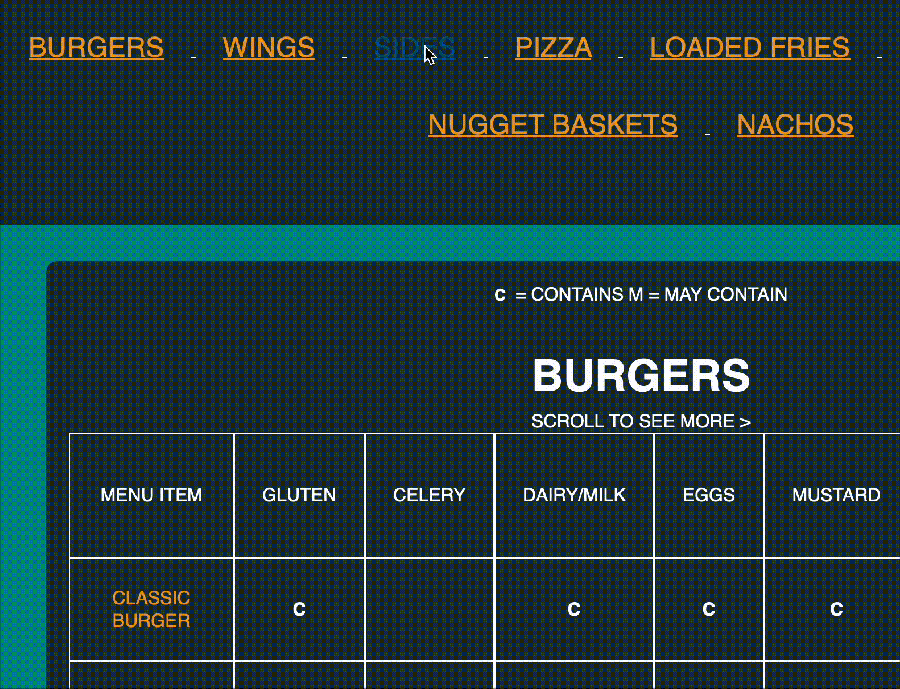

While working at the venue, I was commissioned to design a responsive, user-friendly allergen menu. I followed a structured development schedule and held client meetings to discuss design and progress. The app is built with only HTML and CSS to ensure universal compatibility across devices.
To ensure full compatibility across all devices and browsers, the site was built using only HTML and CSS. CSS animations and anchor-based navigation provide smooth, intuitive access to each food category.
